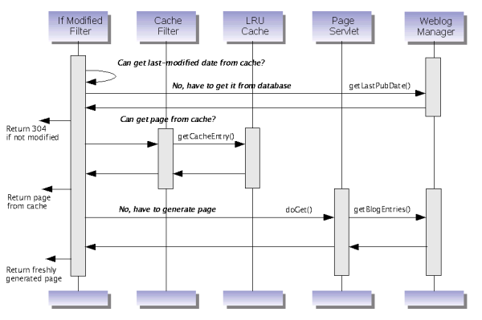

{@link org.roller.presentation.pagecache.PageCacheFilter PageCacheFilter} with pluggable caching implementation. To plugin your own cache, implement the {@link org.roller.presentation.pagecache.FilterHandler FilterHandler} interface. Currently, we have only one implementation: {@link org.roller.presentation.pagecache.LRUCacheHandler2 LRUCacheHandler2}.
The diagram below illustrates the different levels of caching in Roller request handling.
